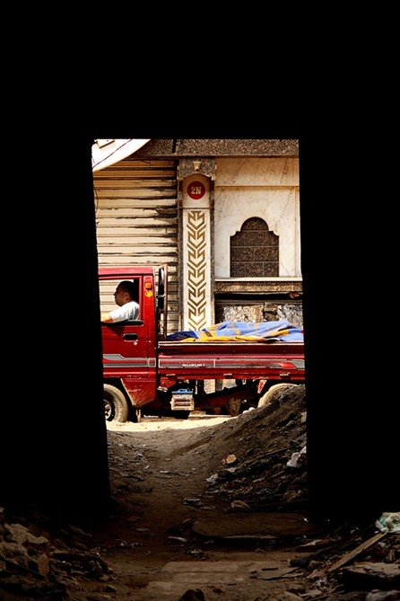
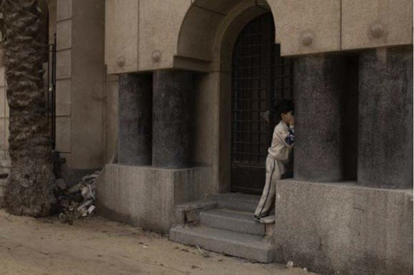
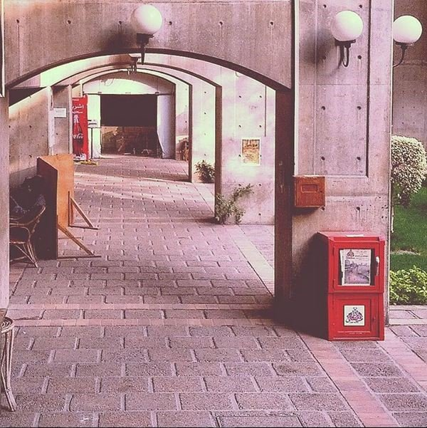

Originally published in Mada Masr on 29 March 2016
By Ismail Fayed
I was invited by CIC to be part of this year's Annual Portfolio Review/Table Exhibition on March 12. I agreed, partly due to my belief in the inevitability of a younger generation of artists taking over and our responsibility to not just support them but create along with them.
Hesham Ahmed's documentation of child labor around Cairo, showing photojournalistic maturity beyond his years
I also had a selfish motive, however: simple curiosity. A decade or more separates me in age from most of the participants, and I had an unwavering desire to sit and talk to the generation of Instagram, Tumblr and Twitter. How do they perceive the image at a time when it is almost taking precedence over language? What kind of images do they produce? How do they define their aesthetic meaning? How do they describe images as "beautiful"?
The hyper-reproduction of images is inextricably linked to the constant representation of oneself via the image in a virtual medium, i.e. social media. Compulsive production of those fictional representations as objects of consumption undermines any substantial connection to meaning. The images are virtual, incessant, viral and of an incredibly short shelf life. Very few of us bother to save images encountered on social media, even if they are images we created ourselves.
A review like CIC's could be a crucial event for a generation that has developed a particular relationship to the image due to this phenomenon. In that context, printing samples of the participants' work creates an interesting tension between virtual and real and between private and public. As CIC's artistic director Andrea Thal said, many of the participants had never seen their work physically printed because they rely on digital formats or even just Instagram. Printing raised crucial questions for them on the materiality of the images they create and how perception changes when they become physical objects to contend with. Decisions regarding size, color adjustments, photo paper and so on suddenly come into play.
Participants lay out their work as printed photographic series on tables at CIC. Three or four invited reviewers, ranging from mid-career artists and art professors to writers and critics, take turns examining the work and engaging the participants in conversation. Each discussion lasts around 15-20 minutes and in total each reviewer examines the work of about 25 participants organized into three rounds over the span of a few hours, which can a bit overwhelming. The public are invited to look at all the works in the format of "table exhibition" after the third round.
This was the second review, as the initiative launched in 2015 as part of CIC's 10th anniversary program. The idea was to create a format open for people from a variety of backgrounds and interests — from artists and amateurs to photojournalists and commercial photographers — to present work.
Last year CIC received around 70 applications, out of which 25 were selected. This year, 50 applications were received and 25 selected. The majority were under 30, but there were some professional photographers presenting projects that they are already working on.
These older photographers presented some extraordinary projects. One is John Perkins' Okasha's Children, a series of black-and-white photographs that look at the culture structures (such as the Ballet Institute) that late Minister of Culture Tharwat Okasha (1921-2012) established and the kinds of bodies and subjects they created and are still creating. Another is Japanese photographer Shimpei Shimokawa's deeply poetic landscapes that evoke the origins of myths and their material connections to nature and the physical environment.
John Perkins, Okasha's Children, examining cultural structures established by Minister Tharwat Okasha
Shimpei Shimokawa's poetic landscapes exploring mythical origins and material connections to nature
With the younger group of participants, I found it a bit awkward to sit opposite 20-something-year-olds and ask what they think about their artistic processes. Yet it seemed necessary, for those interested to explore the artistic possibilities of their work beyond their own pleasure, to have this conversation. The threshold between self-indulgence and the discipline of organizing spontaneous impulses to construct a particular aesthetic object was the grey zone that everyone in the review was navigating, some with more success than others.
Creation always invites a particular kind of narcissism, whereby one is seduced by the act of creation itself rather than the thing created. In these cases, the object created is relished, not for its own content or meaning, but for how it reflects back on its creator. It becomes a flat surface that only reflects an imagined self-image, and at that point it slips into feedback loop: the more you create, the more you are reflected in the imagery, and so on. The most challenging aspect of the review was figuring out how to explain to aspiring artists, amateurs and photojournalists that a work is never interesting if it only appears as a narcissistic meditation on one's self. In my opinion, artwork becomes meaningful in as much as it has something that it self-consciously wants to communicate with an other; making it a subjective process but not entirely solipsistic, and should be guided by ideas, formal concerns and techniques.
It came as no surprise to me that men were the ones who continuously slipped into a more narcissistic state of mind. But it was astonishing to see that a majority of the female artists were unsure, self-abnegating, hesitant and much more concerned with the subject matter and its meaningfulness. Some of their projects were astounding in their maturity and sheer humanism. Wafaa Samir's images, made by tracking down and recording hand-drawn surfaces and murals in popular neighborhoods around Cairo are as sensitive as they are beautiful. Sara Sallam's project Hide and Seek, on absence and presence in places where one shouldn't be, has a visual acumen matched by its conceptual complexity.

Wafaa Samir's documentation of hand-drawn surfaces and murals in Cairo's popular neighborhoods

Sara Sallam, Hide and Seek, exploring absence and presence in forbidden spaces
On the other hand, at least four male participants shared with me a dozen images with the introduction: "I like to take photos." This disclaimer often functions to dispense with attempts to formulate a specific process or concept. Declarations about personal inclination rather than a process seem to reflect what is problematic in an age that reinforces these narcissisms by suggesting that your representation is more interesting than you are. The review confirmed for me that in many images the social media generation produces, reality and meaning are peripheral — or subsumed by the repetitive consumption of transient images whose value rest on how much they conform to a cliché, with little to question. The exercise of seeing someone older engage with their images hopefully helped some participants examine their desires and self-assumptions and how they translate those into a meaningful artistic process.
Not all the male participants fell into the trap of indulgence or narcissism, of course. Some showed remarkable ingenuity and a seriousness beyond their years. Hesham Ahmed is barely 20 years old, yet has embarked on a serious photo-documentation project on child labor around the city in which he lives (see top photo). He has adopted a classic photojournalistic approach with a refreshing and inspiring openness.
The digitally retouched images of Ahmed Serhan showed a strong aesthetic sense and an interesting preoccupation with the formal qualities of the image. They play with color and shadow to explore the spatial qualities of architectural spaces.

Ahmed Sarhan's digitally retouched images exploring spatial qualities through color and shadow
The recent crackdown on independent art spaces in Cairo (CIC included), combined with the dire need to provide opportunities for young artists, especially in image-based practices, places the review in a precarious yet crucial position. There are obviously many cultural producers who are contending with vicissitudes of a turbulent political, social and economic reality against a backdrop of an ever-fragmented, virtual existence. Some of them are coming up with artistic visions and processes that are hopeful and inspiring.